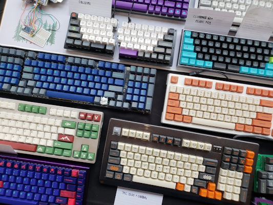

Historia klawiatur

Klawiatury na miarę XXI wieku
Podczas używania komputera na codzień używamy również klawiatury i myszki. Strona ta jest poswięcona historii klawiatur oraz teraźniejszych, personalizowanych klawiaturach. Omawia historię oraz początkowe zastosowanie klawiatur we wczesnych dniach komputerów i maszyn do pisania. W dzisiejszych czasach jest to dla niektórych hobby, narzędzie pracy i sposób wyrażania siebie.
Historia klawiatur
Klawiatury na miarę XXI wieku